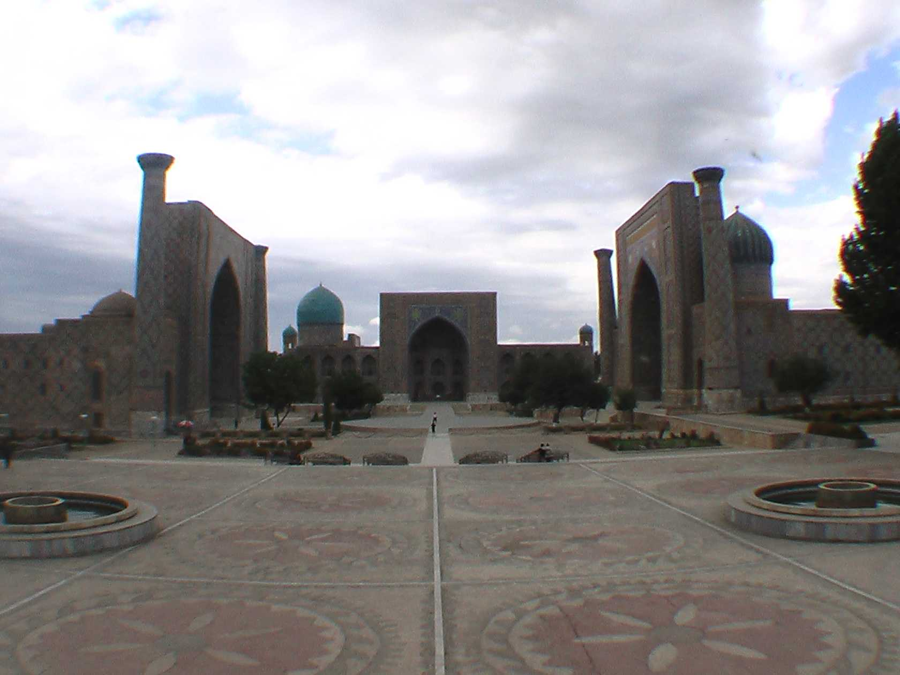
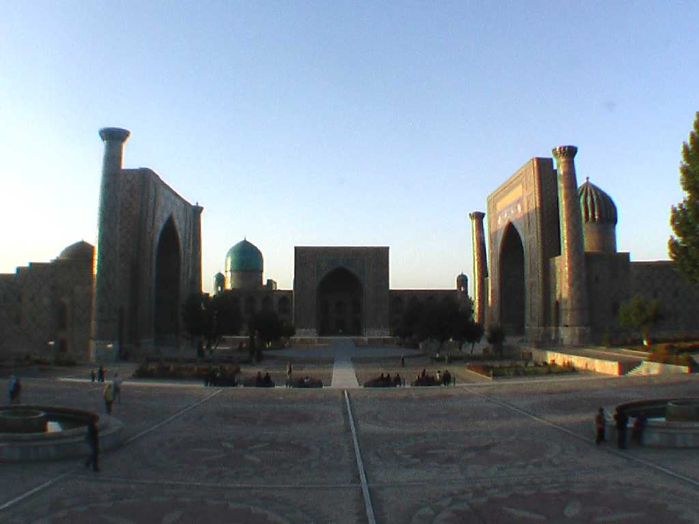
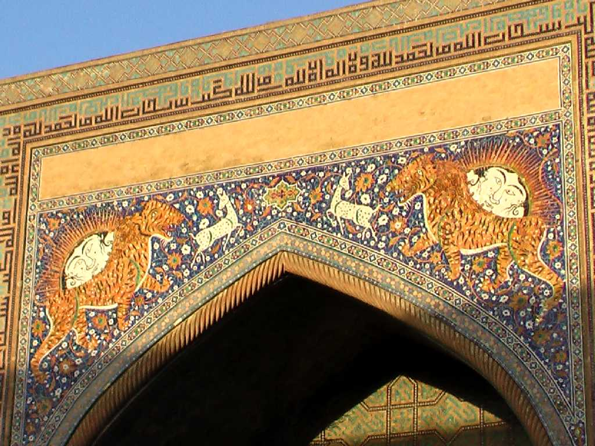
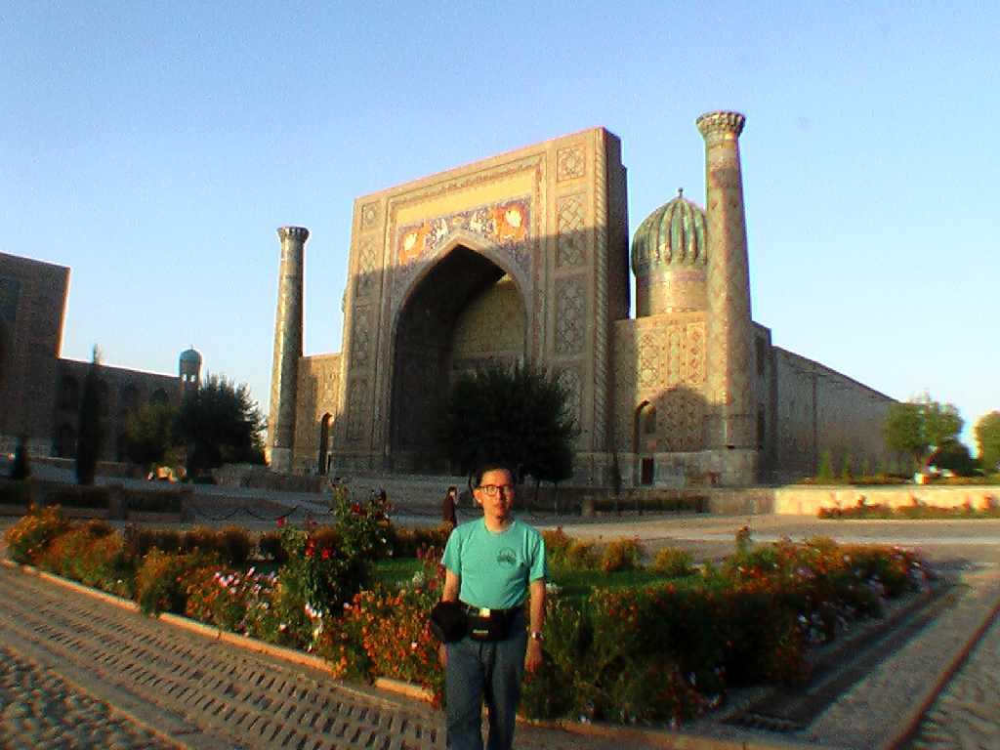

Registan square Samarkand
紀元前１０世紀頃からオアシス都市として発展し始め紀元前４世紀にはソグド人の都市マラカンダとして栄え８世紀にウマイヤ朝により征服されイスラム国となり１５世紀にはチムール帝国の首都として繁栄した サマルカンドの中心にあるレギスタン広場は １４２０年に完成したウルグベクメドレセ １６３０年に完成したシェルドルメドレセ １６６０年に完成したティラカリメドレセの美しい神学校に囲まれている

Evening View Registan square Samarkand
青いタイルはまさに砂漠における水の幻影です

Sher Dor
サマルカンドの都は光輝く土地もしくはオリエントの真珠として３０００年の歴史を持つ中央アジア最古の都市で建造物のタイルの美しさから青い都とも賞賛された

October 1 2008 Registan square Samarkand